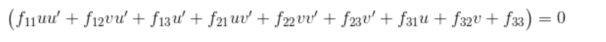
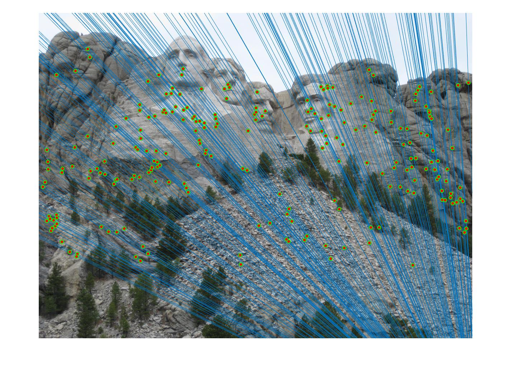

Project 3 / Camera Calibration and Fundamental Matrix Estimation with RANSAC
Introduction
Prior to this project, I had some vague experience with RANSAC and using it in the context of CS3630, robotics and perception. However, this project and unit was incredibly insightful and showed me different use cases for the algorithm. This project was presented in 3 main components:
- Deriving the Camera Projection Matrix
- Estimating the Fundamental Matrix
- Using RANSAC to find Optimal Fundamental Matrix
Deriving the Camera Projection Matrix
My results were quite promising for the camera center, as I used Singlular Value Decomposition to produce a system of equarions. From this I solved for the Projection matrix and was able to find the following camera center:
Results:
The projection matrix is:
-0.4583 0.2947 0.0140 -0.0040
0.0509 0.0546 0.5411 0.0524
-0.1090 -0.1783 0.0443 -0.5968
The total residual is: <0.0445>
The estimated location of camera is: <-1.5127, -2.3517, 0.2826>

|
Estimating the Fundamental Matrix
This process involved mapping points of interest, denoted by (u,v) in image a to image b. Once again, I used a system of equations but this time used the following matrix equation
|  |
Using RANSAC to find Optimal Fundamental Matrix
For every sampling of 8 points, I estimated a fundamental matrix using the techniques described in part 2 and then selected the matrix that resulted in the most inliers. I chose to run RANSAC for 1000 iterations and generate random sample sizes of 8 with an error threshold of 0.02. Inliers were determined by seeing if points had a Sampson Error, a widely used distance metric for gauging the accuracy of the Fundamental Matrix, beneath the threshold. Below is my annotated code for RANSAC and beneath that are my results for both Mount Rushmore and Notre Dame:Annotated Code
function [ Best_Fmatrix, inliers_a, inliers_b] = ransac_fundamental_matrix(matches_a, matches_b)
matchDim = size(matches_a);
iterations = 1000;
sampleSize = 8;
threshold = 0.02;
maxInliers = 0;
bestInlierInd = 0;
Best_Fmatrix = 0;
for i = 1:iterations
sample = randsample(matchDim(1), sampleSize);
F = estimate_fundamental_matrix(matches_a(sample, :), matches_b(sample, :));
oneRow = ones(1, matchDim(1));
F_a = F * [matches_a'; oneRow];
F_b = F * [matches_b'; oneRow];
F2 = zeros(1, matchDim(1));
for j = 1:matchDim(1)
% homogenize
mB_hom = [matches_b(j,:) 1];
mA_hom = [matches_a(j,:) 1];
F2(j) = mB_hom * F * mA_hom';
end
% Get Sampson Error and threshold to find inliers
error = (F2 .^ 2) ./ (F_a(1,:) .^ 2 + F_a(2,:) .^ 2 + F_b(1,:) .^ 2 + F_b(2,:) .^ 2);
inlierInd = find(abs(error) < threshold);
numInliers = length(inlierInd);
% see if better inliers are found
if (numInliers > maxInliers)
% better model found
maxInliers = numInliers;
bestInlierInd = inlierInd;
Best_Fmatrix = F;
end
end
inliers_a = matches_a(bestInlierInd, :);
inliers_b = matches_b(bestInlierInd, :);
end
Results in a table
|  |